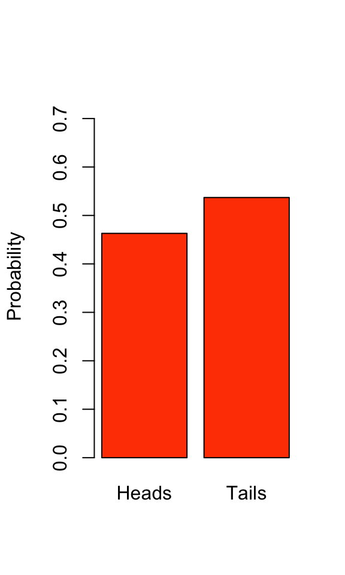
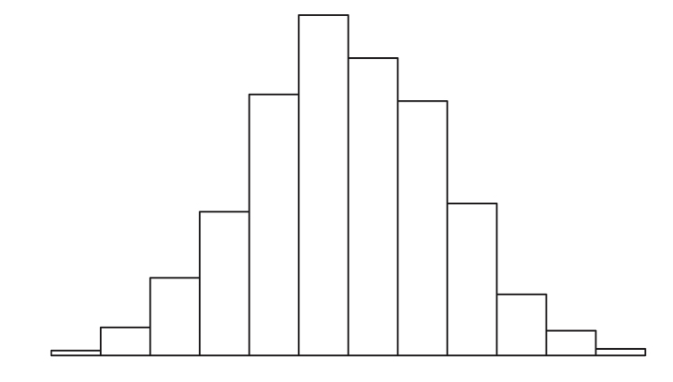
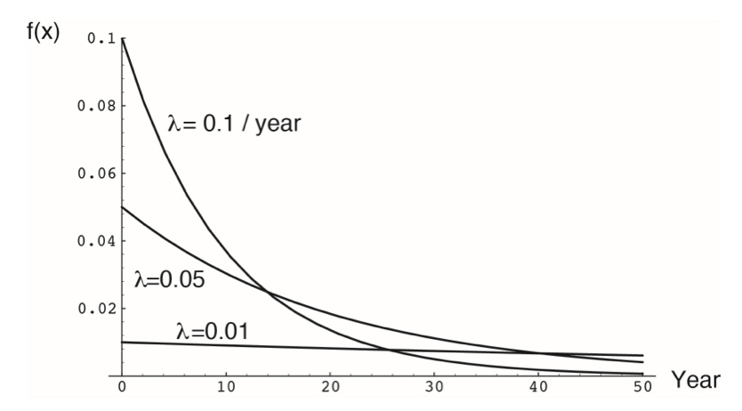
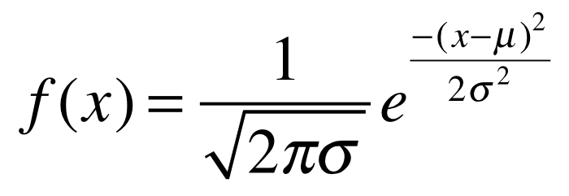
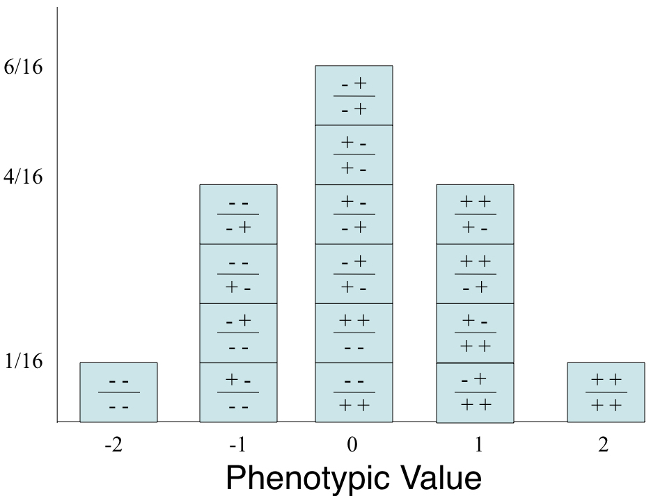

Chapter 9 Introduction to Probability and Probability Distributions
9.1 Background
In this chapter, we will cover the basics of probability and common probability distributions. Probabilistic thinking can mark a significant departure in how we typically consider mathematics, and the world around us more generally. We have to shelve our natural inclination toward determinism, and embrace random variables, shades of likelihood, and complexity. As we’ll see, uncertainty in our estimates is a given. Indeed, the process of statistics is largely about quantifying and managing uncertainty - a process that begins with understanding probability distributions.
Frequently, we want to understand how likely a particular observation or set of observations is (e.g. from a sample of a population), given some expectation. That expectation may be based on a theoretical probability distribution we can use to model variation in nature. In this chapter we will introduce some core concepts of probability and how those pertain to understanding observed parameters, or features, and variation within systems.
9.2 What is probability?
Statistical probability can be understood from two distinct perspectives: the “Frequentist” and the “Bayesian.”
- Frequency interpretation
“Probabilities are mathematically convenient approximations to long run relative frequencies.”
- Subjective (Bayesian) interpretation
“Probability statements are expressions of the opinion of some individual or of current understanding regarding how certain an event is to occur.”
Both conceptions of probability are widely applied in data analysis, though most of the techniques discussed in this book are rooted in frequentist statistics.
9.3 Random variables & probability
Probability is the expression of belief in some future outcome based on information about a system, and is typically applied in statistics to variables we want to understand or estimate in the real world. Specifically, a random variable can take on different values at varying probabilities based on its underlying sample space and probability distribution. The sample space of a random variable is the universe of all possible values for that variable. It may be helpful to think of the sample space in the form of a plotted function, where possible values of the random variable make up the x-axis, and the probability of “drawing” a particular value at random makes up the y-axis.
The sample space can be represented by a probability distribution when our random variable is discrete. By discrete we mean that the variable can take on a limited (finite) number of values. Meristic traits like the number of bristles on the abdomen of an insect or the number of action potentials a neuron experiences in a single window of time can only have positive integer values. Continuous random variables like human height, on the other hand, can in theory take on an infinite number of values, but are in practice limited by our measurement precision. For continuous variables, the sample space is represented by what we call a probability density function (PDF), also called a continuous probability distribution. Probabilities over a sample space always sum to 1.0, meaning that all possible values for that random variable are encompassed by its probability distribution, and we use tools from algebra (for probability distributions) and calculus (for probability density functions) to make use of their properties in statistical modeling and inference.
Distributions of random variables can be expressed as functions that have moments. These moments are metrics of a function’s shape, and these can be estimated. For example the 1st, 2nd, 3rd and 4th moments of a distribution correspond to the mean, variance, skewness, and kurtosis, respectively. For now let’s just consider the first two.
- The expectation or mean of a random variable X is:
\[E[X] = \sum_{\text{all x}}^{}xP(X=x) = \mu\]
- Often we want to know how dispersed the random variable is around its mean
- One measure of dispersion is the variance:
\[Var(X) = E[X^2] = \sigma^2\]
There are many families or forms of probability distributions, and which ones we apply in statistics depend on the dynamical system we are trying to represent. We will return to the most commonly used ones below. Probability distributions are mathematically defined by features we call parameters, which correspond to the moments pointed out above. The parameters of the functions themselves are used to understand properties of the systems we use the functions to model. For example the normal distribution (also called the Gaussian distribution, depicted by a bell curve), which is probably the most famous distribution in statistics, is characterized by 2 parameters: \(mu\) (the mean) and \(sigma^{2}\) (the variance). In practical terms, those parameters dictate the central peak or “mode” and the spread (width), respectively.
These parameters are clearly important for us in thinking about the systems we study. For example in biology we often think about random variables as values expressed by individual living things. We may consider, in theory, all possible individuals under a given set of circumstances, and one or more random variables associated with those individuals. In statistics we call this theoretical notion of all individuals a population. If we can assume that a random variable in that population has a particular probability distribution, it opens the door to estimating the aforementioned population parameters from a random sample of that population. Mean height definitely tells us something about the most common values in a population of humans, as does the variability of height among individuals. So you can see how probability distributions, when applied under the appropriate assumptions, help us understand, quantify, and compare random variables in populations. We will further explore how population parameters are estimated from random samples in the next chapter. For now, we will introduce various probability distributions and the random variables they represent.
9.4 Probability and the Bernoulli distribution
To think about probability and probability distributions, let’s start with the Bernoulli distribution. It describes the expected outcome of an event with probability p. A simple example of this scenario is the flipping of a coin. If that coin is fair, then the probabilities of heads or tails are
\[Pr(X=\text{Head}) = \frac{1}{2} = 0.5 = p \]
\[Pr(X=\text{Tails}) = \frac{1}{2} = 0.5 = 1 - p \]
If the coin isn’t fair then \(p \neq 0.5\). At this point, we don’t know whether our coin is fair or not, so let’s estimate the Bernoulli distribution of our coin flip by flipping our coin 1000 times and visualize the results.

We can see that our estimated Bernoulli distribution indicates a coin that is very close to fair (see Chapter 13: Frequency Analysis for how we might test this statistically). Note that the probabilities still sum to 1, a property of all probability distributions.
\[ p + (1-p) = 1 \]
The Bernoulli distribution can be used to represent other binary possibilities, like success or failure, “yes” or “no” answers, choosing an allele at a biallelic locus from a population, etc…
9.5 Probability rules
Let’s take a moment to cover some basic rules of probability regarding the observation of multiple “events.”
Let’s say we flip a fair coin twice. Represent the first flip as ‘X’ and the second flip as ‘Y.’ H indicates a Heads and T a Tails. The probability for any given sequence of both flips is
\[ Pr(\text{X=H and Y=H}) = p*p = p^2 \] \[ Pr(\text{X=H and Y=T}) = p*p = p^2 \] \[ Pr(\text{X=T and Y=H}) = p*p = p^2 \] \[ Pr(\text{X=T and Y=T}) = p*p = p^2 \]
While the probability of flipping both an H and T in any order is
\[ \text{Pr(X=H and Y=T) or Pr(X=T and Y=H)} = \]
\[ (p*p) + (p*p) = 2p^{2} \]
These are the ‘and’ and ‘or’ rules for the probability of multiple events:
- ‘and’ means multiply the probabilities to attain the probability of both events happening
- ‘or’ means sum the probabilities to attain the probability of either event happening
- most probability distributions can be built up from these simple rules
9.6 Joint probability
The joint probability is the probability of two or more outcomes co-occurring. Following the ‘and’ rule,
\[Pr(X,Y) = Pr(X) * Pr(Y)\]
As above, this multiplication is true for two independent events. However, for two non-independent events we also have to take into account their covariance. To do this we need to determine their conditional probabilities.
9.7 Conditional probability
Variables that are non-independent have a shared variance, which is also known as covariance. You can think of this as two variables that consistently deviate from their respective means. Covariance standardized to a mean of zero and a unit standard deviation is correlation, which we’ll discuss in detail in Chapter 12. To assess the probability of two events where they might not be independent, we must considering their conditional probability.
- The conditional probability for two independent variables:
\[Pr(Y|X) = Pr(Y)\]
\[Pr(X|Y) = Pr(X)\]
This means that the probability of Y given X is just the probability of Y, and the reverse is true for the probability of X given Y. In other words, the occurrence of event X or Y has no influence on the occurrence of the other event. These variables are therefore independent.
- The conditional probability for two non-independent variables:
\[Pr(Y|X) \neq Pr(Y)\]
\[Pr(X|Y) \neq Pr(X)\]
In this case, the probability of Y given X does not equal the probability of just Y. Thus, one is influencing the probability of the other. More specifically, when we have two non-independent events, the equation for the conditional probability of one event given the other is
\[Pr(Y|X) = \frac{Pr(X|Y)Pr(Y)}{Pr(X)}\]
which is also known as Bayes’ Theorem.
9.8 A brief note on likelihood vs. probability
The probability of an event is the proportion of times that the event would occur if we repeated a random trial over and over again under the same conditions.
The likelihood is the probability of observing a particular set of data or outcome, given a particular parameter value.
L[parameter|data] = Pr[data|parameter]
Extending from this, the parameter value at which the likelihood is maximized is called the maximum likelihood estimate (MLE). You don’t need to worry too much about likelihood in this course, but realize that many of our formualae for estimating parameters from data actually produce maximum likelihood estimates. The formula we use to calculate a mean from a sample of observations, for example, produces the maximum likelihood estimate for the population mean from which that sample was taken. The likelihood function (for a single parameter) or likelihood surface (for multiple parameters) describes the relationship between different parameter values and their likelihood. We can’t always derive convenient equations to obtain maximum likelihood estimates, however, and in those cases we may have to rely on algorithmic searches of “parameter space” to find the MLE.
9.9 Probability distributions commonly used in biological statistics
(Many of these are thanks to Sally Otto at UBC)
9.9.1 Discrete Probability Distributions
9.9.1.1 Geometric Distribution
If a single event has two possible outcomes at probability p and 1-p, and is independent of past events (i.e. a Bernoulli trial), the probability of having to observe k trials before the first “success” appears is given by the geometric distribution. The probability that the first “success” would appear on the first trial is p, but the probability that the first “success” appears on the second trial is (1-p)*p. By generalizing this procedure, the probability that there will be k-1 failures before the first success is:
\[P(X=k)=(1-p)^{k-1}p\]
- mean = \(\frac{1}{p}\)
- variance = \(\frac{(1-p)}{p^2}\)
9.9.1.1.1 The Geometric Distribution in practice
The geometric distribution applies in any scenario in which we want to know the probability of a certain number of failures before we observe an event (assuming each trial is independent). Dice rolls, free throws in basketball, sales pitches, and many more such sequential trials with two outcomes are modeled well by the geometric distribution.
For example, if the probability of extinction of an endangered population is estimated to be 0.1 every year, what is the expected time until extinction?

Here we can see the probability of extinction in any given year. If we wanted to know the probability of extinction by a specific year, we can simply apply the ‘or’ rule and sum the probabilities up until the specified year. The probability of extinction by year 4 is equivalent to the probability of extinction in year 1 or year 2 or year 3, \(0.1 + (1 - 0.1)*0.1 + (1 - 0.1)^2*0.1 = 0.271\).
9.9.1.2 Binomial Distribution
A binomial distribution represents the distribution of outcomes from the combination of several Bernoulli trials i.e. independent trials with only two outcomes. In fact, the Bernoulli distribution is just a special case of the binomial distribution for n = 1 Bernoulli trials. The distribution of probabilities for each combination of outcomes is
\[\large f(k) = {n \choose k} p^{k} (1-p)^{n-k}\]
- n is the total number of trials
- k is the number of successes
- p is the probability of success
- q is the probability of not success
- For binomial as with the Bernoulli p = 1-q
9.9.1.2.1 The binomial distribution in practice
Pretend that you flip 20 fair coins (or collect alleles from a heterozygote). Now repeat that process 100 times and record the number of heads that show. We expect that most of the time we will get approximately 10 heads in 20 flips. However, sometimes we will get many fewer heads or many more heads. If we plot the frequency of the proportion of “successes,” or heads, we get in each of our 100 replicates, we get the binomial distribution. Because our coin is fair, we can reasonably expect this distribution to center around 0.5.

The binomial distribution is the basis for frequency tests when outcomes are binary.
9.9.1.3 Negative Binomial Distribution
The negative binomial distribution is an extension of the geometric distribution describing the expected time until not just one success but r “successes” have occurred. Mathematically, it is a generalization of the geometric distribution, where the probability of the \(r^{th}\) “success” appearing on the \(k^{th}\) trial is:
\[P(X=k)=(\frac{k-1}{r-1})p^{r-1}(1-p)^{k-r}p\]
which simplifies to
\[P(X=k)=(\frac{k-1}{r-1})p^{r}(1-p)^{k-r}\]
- mean = \(\frac{r}{p}\)
- variance = \(r(1-p)/p^2\)
For example, if a predator must capture 10 prey before it can grow large enough to reproduce, what would be the expected age of onset of reproduction if the probability of capturing a prey on any given day is 0.1?

Notice that the variance is quite high (~1000) and the distribution is fairly skewed. Generally, a low probability of success p and a high threshold of successes r leads to a highly dispersed distribution with considerable kurtosis (‘tailedness’).
9.9.1.4 Poisson Probability Distribution
Another common situation in biology is when each trial is discrete, but the number of observations of each outcome is observed/counted. Such scenarios are modeled well by the Poisson distribution. For example, counts of snails in several plots of land, observations of the firing of a neuron in a unit of time, or count of genes in a genome binned to units of 500 AA. Just like before, you have ‘successes,’ but now you count them for each replicate where replicates are now units of area or time. Values can now range from 0 to a large number.
For example, you can examine 1000 genes and count the number of base pairs in the coding region of each gene. What is the probability of observing a gene with ‘r’ bp?
Pr(Y=r) is the probability that the number of occurrences of an event y equals a count r in the total number of trials.
\[Pr(Y=r) = \frac{e^{-\mu}\mu^r}{r!}\]
Note that this is a single parameter function because \(\mu = \sigma^2\) - the two together are often just represented by \(\lambda\).
\[Pr(y=r) = \frac{e^{-\lambda}\lambda^r}{r!}\]
This means that for a variable that is truly Poisson distributed, the mean and variance should be roughly equal to one another. Variables that are approximately Poisson distributed but have a larger variance than the mean are called ‘overdispersed,’ indicating that the observed variance is larger than appropriate for the theoretical distribution. This is quite common in RNA-seq and microbiome data. When overdispersion is a problem in count data, we often use the negative binomial distribution instead because it allows the variance to differ from the mean.
9.9.1.4.1 Poisson Probability Distribution | gene length by bins of 500 nucleotides

9.9.1.4.2 Poisson Probability Distribution | increasing parameter values of \(\lambda\)

9.9.1.4.3 Horse kick deaths in the Prussian army
One of the earliest applications of the Poisson distribution was in 1898, when it was used to model the number of soldier deaths from horse kicks in 14 different corps of the Prussian army. As can be seen from the chart below, the Poisson distribution does a remarkable job at modeling these unfortunate events. Indeed, while it is useful for count data in general, it is particularly effective at modeling the distribution of unlikely, independent events.
9.9.2 Continuous probability distributions
Up until this point, we have been looking at discrete probability distributions, where our measurements represent integer or categorical values (event outcomes, counts, etc…) and the probability of a specific observation can be directly quantified. We will now discuss probability density functions (PDFs), better known as continuous probability distributions. These represent the distribution of continuous values, from which a random sample can take on an infinite number of values within the range of the distribution (limited by measurement accuracy). As such, unlike discrete probability distributions, the probability of finding any exact value within a continuous distribution is effectively 0. We must instead look at the probability of a measurement falling between a range of values, a and b i.e. the integral of the density function (the area beneath the curve) between said values.
P(observation lies within dx of x) = f(x)dx
\[P(a\leq X \leq b) = \int_{a}^{b} f(x) dx\]
Remember that the indefinite integral sums to one
\[\int_{-\infty}^{\infty} f(x) dx = 1\]
The expected value of a random variable X, E[X], may be found by integrating the product of x and the probability density function over all possible values of x:
\[E[X] = \int_{-\infty}^{\infty} xf(x) dx \]
\(Var(X) = E[X^2] - (E[X])^2\), where the expectation of \(X^2\) is
\[E[X^2] = \int_{-\infty}^{\infty} x^2f(x) dx \]
9.9.2.1 Uniform Distribution
The uniform distribution is rectangular, meaning that all values have equal probability between the bounds of the distribution \([a,b]\). Its PDF for an expected value of X is given by
\[E[X] = \int_{a}^{b} x\frac{1}{b-a} dx = \frac{(a+b)}{2} \]

While we are introducing it here as a continuous probability distribution, the uniform distribution has a discrete application as well. Both are used to describe any scenario in which an outcome has equal probability to occur, like true random number generation, or a dice roll in the discrete case.
9.9.2.2 Exponential Distribution
The exponential distribution can be thought of as the continuous alternative to the geometric distribution, describing the probability of the occurrence of an event or state change over time, given a continuous process. It is defined by a single parameter, the rate constant \(\lambda\), which represents the instantaneous probability of an event occurring. The PDF is
\[f(x)=\lambda e^{-\lambda x}\]
E[X] can be found be integrating \(xf(x)\) from 0 to infinity, leading to the result that
- \(E[X] = \frac{1}{\lambda}\)
- \(E[X^2] = \frac{1}{\lambda^2}\)
For example, let \(\lambda\) represent the instantaneous death rate of an individual. The expected lifespan of that individual would be described by an exponential distribution (assuming that \(\lambda\) does not change over time).

More generally, the exponential distribution describes many situations in which the probability of an event is approximately constant and independent. It is widely applied in survival analysis, actuarial sciences, marketing, and the physical sciences (particularly any process exhibiting exponential decay).
9.9.2.3 Gamma Distribution
The gamma distribution generalizes the exponential distribution in the same way that the negative binomial distribution generalizes the geometric distribution. Instead of representing the probability of the first occurrence of an event, it models the waiting time until the \(r^{th}\) event for a process that occurs randomly over time at a rate \(\lambda\):
\[f(x) = \frac{e^{-\lambda x}\lambda x^{r-1}}{(r-1)!}\lambda\]
\[ Mean = \frac{r}{\lambda} \] \[ Variance = \frac{r}{\lambda^2} \]
For example, if in a PCR reaction, DNA polymerase synthesizes new DNA strands at a rate of 1 per millisecond, how long until 1000 new DNA strands are produced? Assume that DNA synthesis does not deplete the pool of primers or nucleotides in the chamber, so that each event is independent of other events in the PCR chamber.
9.9.2.4 The Gaussian or Normal Distribution
The ‘Gaussian,’ or Normal distribution is one of the best known probability distributions. Many people whether statistically versed or not have an intuitive understanding of the normal distribution because it models the nature of random continuous variables in a population well - that is, they have a central tendency plus a constrained amount of deviation around this tendency (a “bell curve”). The normal distribution has two parameters, the mean \(\mu\) and the standard deviation \(\sigma\). The PDF of the normal distribution is defined as
 where \[\large \pi \approx 3.14159\]
\[\large e \approx 2.71828\]
To write that a variable (v) is distributed as a normal distribution with mean \(\mu\) and variance \(\sigma^2\), we write the following:
\[\large v \sim \mathcal{N} (\mu,\sigma^2)\]
9.9.2.4.1 Normal PDF | estimates of mean and variance
Estimate of the mean from a single sample
\[\Large \bar{x} = \frac{1}{n}\sum_{i=1}^{n}{x_i} \]
Estimate of the variance from a single sample
\[\Large s^2 = \frac{1}{n-1}\sum_{i=1}^{n}{(x_i - \bar{x})^2} \]

9.9.2.4.2 Why is the Normal distribution special in biology?


9.9.2.4.3 Parent-offspring resemblance

9.9.2.4.4 Genetic model of complex traits

9.9.2.4.5 Distribution of \(F_2\) genotypes | really just binomial sampling

9.9.2.4.6 The Central Limit Theorm
The normal distribution is immensely useful because of the Central Limit Theorem, which says that the mean or the sum of many random variables independently drawn from the same distribution is distributed approximately normally. One can think of numerous real-world situations in which this applies, such as when multiple genes contribute to a phenotype or when many factors contribute to a biological process. In addition, whenever there is variance introduced by stochastic factors the central limit theorem holds. Thus, normal distributions occur throughout genomics, while representing the basis of classical statistics.
9.9.2.4.7 A note on z-scores of normal variables
Often we want to make variables more directly comparable to one another, particularly when they have scales differing by one or more orders of magnitude. For example, consider measuring the leg length of mice and of elephants. Which animal has longer legs in absolute terms? What about proportional to their body size? A good way to answer these last questions is to use ‘z-scores.’
A z-score is a statistic standardized to a mean of 0 and a standard deviation of 1. To attain the z-score for a given estimate, we can modify any normal distribution to have a mean of 0 and a standard deviation of 1 by normalizing the distribution to the population’s standard deviation (another term for this is the standard normal distribution). The z-score, then, is the number of standard deviations from the mean (0) of this distribution.
\[\huge z_i = \frac{(x_i - \bar{x})}{s}\]
9.10 Exercises associated with this chapter:
- Problem Set 2
9.11 Additional learning resources:
Irizarry, R. A. Introduction to Data Science. https://rafalab.github.io/dsbook/ - A gitbook written by a statistician, with great introductions to key topics in statistical inference.
Logan, M. 2010. Biostatistical Design and Analysis Using R. - A great intro to R for statistical analysis